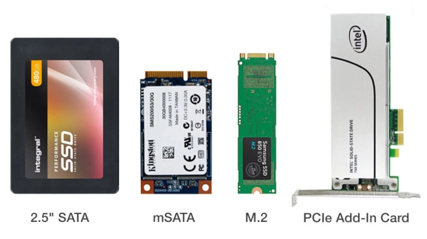

Из чего состоит SSD
Несмотря на разницу в применении, архитектура всех твердотельных накопителей в общем виде выглядит одинаково.
В состав твердотельных накопителей входят:
- PCB — печатная плата.
- NAND-flash — флэш-память NAND; отвечает за хранение данных.
- NAND-controller — контроллер памяти; выступает в роли посредника между носителем и системой, и является процессором, отвечающим за производительность SSD.
- DRAM — кэш (присутствует не во всех моделях SSD); выступает временным хранилищем небольшого объема данных и позволяет стабилизировать износ памяти, а также ускорить доступ к файлам.
- HOST Interface — интерфейс подключения; тип соединения и протокол, через которые SSD соединяется с вашей системой.
Форм-фактор
На данный момент на рынке представлено огромное количество различных твердотельных накопителей. Первое, что бросается в глаза — это различие форм-факторов. При выборе SSD для своей системы вы можете столкнуться со следующими форматами:
- mSata — несколько устаревший формат низкопрофильной платы, предназначенный для ноутбуков, планшетов и портативной техники; использует подключение через интерфейс SATA.
- 2.5 дюйма — всем знакомый по портативным жёстким дискам формат, который используется как в настольных системах, так и в ноутбуках; использует подключение через интерфейс SATA.
- M.2 — современный формат низкопрофильной платы, позволяющий осуществлять подключение через специальный слот M.2; использует подключение как через интерфейс SATA, так и через PCI-Express.
- PCI-Express AIC — карты расширения для слотов PCI-Express, предназначенные для настольных компьютеров, рабочих станций и серверов.
- U.2 — формат 2.5-дюймовых накопителей, разработанный для использования через интерфейс PCI-Express при помощи специального коннектора малого формата.
Интерфейс подключения SSD напрямую влияет на его скорость.
Для понимания задач, выполняемых контроллером, необходимо иметь базовые представления об организации NAND флеш-памяти. Микросхемы NAND флеш-памяти достаточно специфичны в использовании, начиная от интерфейса подключения и заканчивая достоверностью хранения информации.